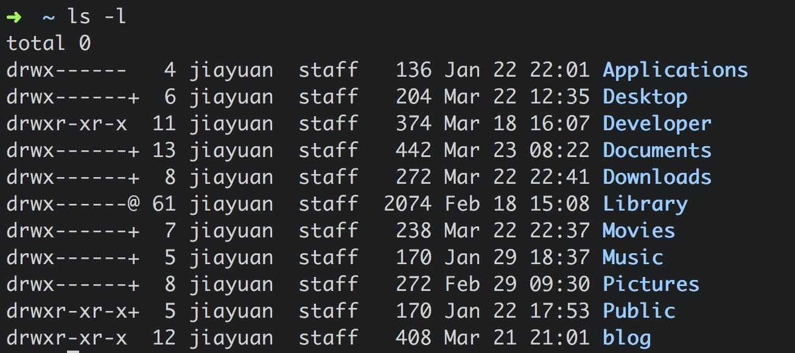
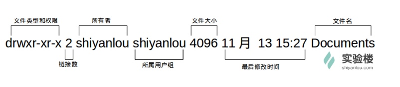
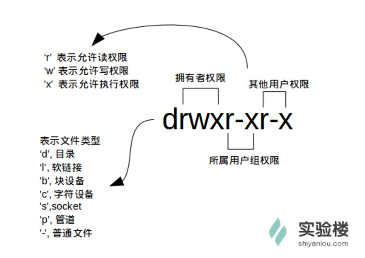
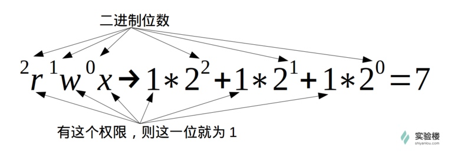

Linux
Shell 的基本操作
常用快捷键
| 按键 | 作用 |
|---|---|
Tab |
命令补全 |
Ctrl+c |
强行终止当前程序 |
Ctrl+d |
键盘输入结束或退出终端 |
Ctrl+s |
暂定当前程序，暂停后按下任意键恢复运行 |
Ctrl+z |
将当前程序放到后台运行，恢复到前台命令 fg |
Ctrl+a |
将光标移动到行首 |
Ctrl+e |
将光标移动到行尾 |
Ctrl+k |
删除从光标所在位置到行末 |
Alt+Backspace |
向前删除一个单词 |
常用通配符
| 字符 | 含义 |
|---|---|
* |
匹配0或多个字符 |
? |
匹配任意一个字符 |
[list] |
匹配 list 中的任意单一字符 |
[!list] |
匹配除 list 中的任意单一字符以外的字符 |
[c1-c2] |
匹配c1-c2中的任意单一字符，如[0-9][a-z] |
{string1,string2,...} |
匹配其中一个字符串 |
{c2..c2 |
匹配c1-c2中全部字符，如{1..10} |
用户管理
查看用户
$ who am i
或者
$ who mon likes
who 命令其他常用参数
| 参数 | 说明 |
|---|---|
-a |
打印能打印的全部 |
-d |
打印死掉的进程 |
-m |
同 am i, mom likes |
-q |
打印当前登陆用户数及用户名 |
-u |
打印当前登陆用户登陆信息 |
-r |
打印运行等级 |
创建用户
创建用户需要 root 用户的权限，所以需要使用 sudo 这个命令。使用 sudo 名利需要满足两个条件：
- 知道当前登陆用户的密码
- 当前用户必须在
sudo用户组
$ su <user> # 切换用户到 user
$ sudo <cmd> # 以 root 权限运行命令
$ su - <user> # 切换用户，并且环境变量同时改变到目标用户的环境变量
新建用户命令：
$ sudo adduser <username>
创建用户的同时会为用户创建 home 目录。
用户组
在 Linux 中每个用户都有一个用户组，它们共享一些资源和权限，同时拥有私有资源。
查看自己的用户组
$ groups <username>
或者，查看/etc/group文件
$ cat /etc/group | sort
sort 表示将读取的文本进行一个字典排序再输出。
etc/group 文件格式说明
/etc/group 的内容包括用户组（Group）、用户组口令、GID 及该用户组所包含的用户（User），每个用户组一条记录。格式如下：
group_name:password:GID:user_list
将其他用户加入 sudo 用户组
使用 usermod 命令可以为用户组添加用户，使用该命令需要有 root 权限。
使用一个具有 root 权限的用户为一个不具有 root 权限的用户添加 sudo 权限：
$ sudo usermod -G sudo <username>
删除用户
$ sudo deluser <username> --remove-home
文件权限
查看文件权限
$ ls -l



文件类型
Linux 里面一切皆文件。
文件权限
- 读权限：可以读取某个文件的内容
- 写权限：可以编辑和修改某个文件
- 执行权限：通常指可以运行的二进制程序文件或者脚本文件
注：一个目录要同时具有读权限和执行权限才可以打开，要有写权限才允许在其中创建其他文件。Linux 不是用过文件的后缀名来区分文件的类型。
链接数
链接到该文件所在的 inode 结点的文件名数目。
修改文件权限
方法1：二进制数字表示

修改
$ chmod 700 <filename>
方法2：加减赋值操作
$ chmod go-rw <filename>
'g''o'还有'u'，分别表示group，others，user，'+'，'-' 就分别表示增加和去掉相应的权限。